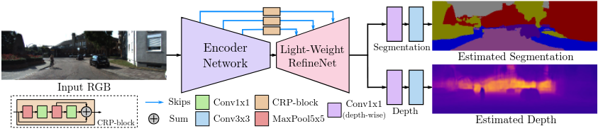

Hydranets in ROS2
My interest in deep learning had grown throughout my engineering consulting career at Accenture, and I was quickly picking up the software engineering skills through my work on perception and automotive middleware. Around the same time, deep learning had established it's place in the field of robotics, and was making it's way into production vehicles. I was particularly drawn to the concept of Hydranets, which seemed to hold a lot of promise. I wanted to explore how I could apply multi-task learning to my own work in robotics, and so I decided to share my experience with Deep Learning.

The video above illustrates depth and semantic segmentation inferences from a hydranet model that is deployed in the ROS2 middleware. The image stream is vehicle playback data that my friends and I took while driving around our university campus.
Deep learning and AI in general is a rapidly evolving field where lots of research is going on. Its
important to understand how read the research papers and how they contribute to the state of the art.
The other side of the equation is deployment and integration, which in itself can be a harder task Than
model development. Most robotics applications demand high throughput and real-time performance, and that is
where the Hydranets come in.
I decided to set some goals that would alleviate my FOMO:
- Learn to understand and critically evaluate state of the art deep learning papers.
- Understand to create multi-task learning models and train them.
- Integrate a new state-of-the-art model in Robotic Middlware.
My deep learning journey started in the summer of 2021 with two amazing resources: fastai's Practical Deep Learning for Coders and Deep Lizard's Deep Learning Fundamentals and Pytorch-Python Deep Learning Neural Network API. These courses taught me the the theoretical and practical fundamentals and I set me up to go on to the deeper path of Computer Vision.
Having been equipped with the essential concepts of machine learning, I was ready to move on to my chosen specialized field of Computer Vision. Jeremy Cohen's Think Autonomous was my immediate choice for that. I had come across Jeremy's blog a number of times and had gained so much insight from him that it was basically a no-brainer at that point, so I enrolled in his Hydranet course, which focused on the theoretical and practical concepts of Hydranets that were applied in this paper: popular multi-task learner concepts that were implemented in this paper: https://arxiv.org/abs/1809.04766.

Much like the famous U-Net, this model takes on the popular
encoder-decoder architecture, where the encoder gradually reduces the spatial dimensions of the feature maps
to increase the number of feature channels, and the decoder gradually increases the spatial dimensions of
the feature maps in addition to skip connections from the encoder to the decoder, which allows the model to retain
spatial features while still leveraging the feature extraction capabilities of the encoder.
The authors of the paper placed a strong emphasis on real-time applications through using the Mobilenet V2
as the encoder, a lightweight RefineNet as the decoder, and using depthwise separable convolutions to reduce
the number of parameters and floating-point operations.
My initial plan when I enrolled in Jeremy's course was to integrate the Hydranet into ROS2. That way I would pick up ROS2 and Deep Learning at the same time. So I had picked up ROS2 while taking that course.
On my journey, I discovered that I could integrate a trained model from eager mode to producton mode. Pytorch provided Pytorch JIT and Libtorch, which respectively give tracing/scripting capabilities to the model and a C++ API that enable further optimization to the model. I decided to adopt that as part of the integration knowing that this would add an extra layer of effort that came with C++, but that's the language of robotics, and I wanted to do it right.
I traced the model and deployed it in a ros node that would prepare the image coming in from the camera, pass the image into the network for inferencing, and advertise the depth and segmentation outputs.